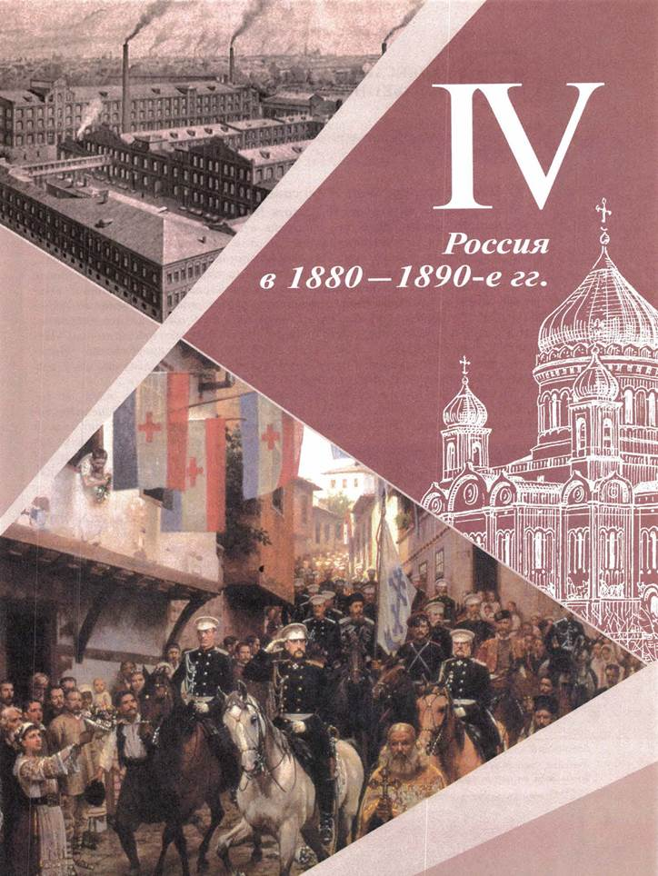
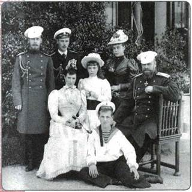
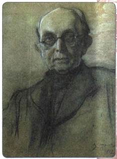
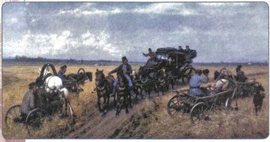
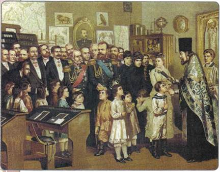

Как изменилась направленность внутренней политики правительства после смены императора?
1. Новый император: Александр III
После убийства Александра II 1 марта 1881 г. на престол вступил его сын Александр III. Первое время его политика в значительной степени определялась потрясением от трагической гибели отца. Настроение, царившее в это время в правящих кругах, один из современников назвал «великой паникой».
Это настроение поначалу умело подогревали народовольцы. Вскоре после убийства царя один из немногих избежавших ареста руководителей «Народной воли» Л. А. Тихомиров составил и сумел передать послание Александру III. В нём он требовал немедленно созвать Учредительное собрание, которое должно было определить будущее страны. В противном случае «Народная воля» продолжит террор, не исключая и новое цареубийство. (Интересно, что сам Тихомиров спустя всего 8 лет испросит помилования у императора и добровольно отречётся от идей «Народной воли».)
Александр III ни на какие соглашения с убийцами отца идти не собирался. В конце апреля 1881 г. им был издан манифест «О незыблемости самодержавия». В нём император заявил, что основную свою задачу видит в том, чтобы укреплять самодержавную власть и охранять её «от всяких на неё поползновений». Чуть ранее проект «конституции» Лорис-Меликова был отклонён. Сам Лорис-Меликов, понимая, что прежние возможности реформаторской деятельности упущены, ушёл в отставку.
Новый император, Александр III, был, по отзывам современников, человеком на редкость настойчивым и последовательным в достижении своей цели. Мыслил он вполне традиционно, в духе «официальной народности», искренне считая самодержавие единственной формой власти, пригодной для управления Россией, более того, спасительной для неё. В то же время царь был твёрдо убеждён, что, помимо чиновников, самодержавие имеет лишь одну по-настоящему серьёзную опору — поместное дворянство. В укреплении государственной власти, с одной стороны, и дворянства — с другой, в их постоянном сотрудничестве император видел единственную возможность нормализовать положение страны.

Александр III с семьёй. Узнайте, используя дополнительный материал, кто изображён на фотографии рядом с императором.
2. Перемены во внутренней политике
Александр III критически относился к реформам своего отца. Понимая, что Крестьянская реформа 1861 г. заметно ослабила помещиков, Земская и Судебная реформы уменьшили власть чиновников, он считал необходимым это исправить. Политика нового царя была направлена прежде всего на борьбу с «губительными последствиями» либеральных реформ Александра II. В 1880— 1890-е гг. император проводит ряд консервативных мер: издаются законы, которые постепенно «забирают» широкие возможности, данные ранее, как бы перечёркивая либеральные реформы 1860—1870-х гг. Поэтому такую политику многие историки называют контрреформами. Она связана во многом с именами двух консервативных деятелей, единомышленников императора — Д. А. Толстого и К. П. Победоносцева.
Д. А. Толстой занимал важнейший пост министра внутренних дел в 1882—1889 гг. Современники отмечали, что Толстой был поборником сильной власти. Законодательные меры, проведённые и подготовленные при нём, были направлены к возвышению дворянства, расширению влияния администрации в местном управлении.
Другим крупным приверженцем консервативной политики был государственный деятель, учёный-правовед К. П. Победоносцев. Он занимал пост обер-прокурора Синода в 1880—1905 гг. и выступал за усиление в школах религиозных и нравственных начал, ратуя за воспитание населения в духе преданности императору и Отечеству. Победоносцев критиковал основы западной демократии и боролся с теми, кто пропагандировал эти ложные, по его мнению, ценности.
Ещё одним видным вдохновителем политики контрреформ стал публицист М. Н. Катков. Он превратил свои издания — журнал «Русский вестник» и газету «Московские ведомости» — в настоящую трибуну сторонников контрреформ. Публикации в его изданиях нередко являлись толчком для проведения тех или иных правительственных мер. Бывали случаи, когда после катковских статей следовали отставки и перемещения в правительстве.
3. Укрепление государственной власти
В августе 1881 г. Александр III утвердил «Положение о мерах к охранению государственного порядка и общественного спокойствия». В соответствии с ним правительство могло в любой губернии по представлению местных властей ввести чрезвычайное положение, которое расширяло полномочия местных властей (генерал-губернаторов, губернаторов, градоначальников). Чрезвычайное положение означало, что власти губернии могли издавать особые постановления, охраняющие «общественное спокойствие», штрафовать или подвергать аресту (сроком не более 3 месяцев) тех, кто эти постановления не соблюдает, а также выдворять неугодных лиц за пределы губернии. Местным властям было дано также право запрещать народные собрания, приостанавливать деятельность земств, закрывать торговые и промышленные заведения, если это угрожает государственной безопасности и нарушает «общественное спокойствие». Многие губернии воспользовались таким правом. Первоначально «Положение» вводилось в губернии на 1,5 года, но возобновить его, как правило, не представляло труда.

Портрет К. П. Победоносцева. Художник В. А. Серов
Другим направлением внутренней политики было укрепление позиций помещиков в уездах и губерниях. Наиболее значительными из мер в этом направлении стали создание на местах должности земского начальника и земская контрреформа.
Земские начальники с 1889 г. были поставлены во главе земского участка (в каждом уезде таких участков было 4—5). Назначались они министром внутренних дел из числа местных потомственных помещиков. А между тем заниматься им приходилось делами крестьянскими. Им подчинялись все представители выборного крестьянского управления — десятские, сотские, волостные старшины. Следя за соблюдением порядка, сбором податей, обеспечением воинской повинности, земские начальники получили право штрафовать крестьян, подвергать их телесным наказаниям, сажать под арест. В целом подобное преобразование в полной мере заслуживало название контрреформы, поскольку правительство явно пыталось здесь свести на нет одну из важнейших сторон реформы 1861 г. — потерю помещиками власти над крестьянами. Теперь, хотя бы отчасти, эта власть восстанавливалась в лице земских начальников.
Земская контрреформа 1890 г. преследовала те же цели, что и введение должности земских начальников — подчинение дворянам земского самоуправления. Это было сделано путём изменений в системе выборов. Для землевладельческой курии имущественный ценз был снижен вдвое, для городской же значительно повышен. Теперь гласные-помещики стали численно преобладать в земствах. Крестьянская же избирательная курия вообще потеряла право самостоятельного выбора: окончательное решение по предложенным кандидатам в гласные принимал губернатор. Это давало возможность отсечь от земской деятельности «крикунов и смутьянов».

Объезд епархии. Художник П. О. Ковалевский
Стремясь укрепить поместное дворянство, самодержавие поставило себя в сложное положение. Немногие процветающие помещики, перестроившие своё хозяйство на новый лад, обычно меняли и свои взгляды, проникались либеральными убеждениями и были недовольны политикой властей. Рассчитывать на них правительство не могло. Поддерживали его в основном помещики старого, крепостнического закала, чьё хозяйство велось за счёт отработок. Но эти помещики теперь часто с трудом сводили концы с концами, разорялись и теряли своё значение на местах.
Правительство пыталось исправить ситуацию, оказывая помещикам ещё и финансовую поддержку: в 1885 г. был учреждён Дворянский банк, дававший ссуды на льготных условиях под залог поместий. В первый же год банк ссудил помещикам почти 70 млн рублей. Эти деньги замедлили ход оскудения поместного дворянства, но остановить его не могли.
4. Политика в области просвещения и цензуры
Главное направление преобразований в сфере высшего и среднего образования заключалось в том, чтобы сделать их менее доступными для «простонародья» и поставить под максимально жёсткий контроль.
В духе этих идей министр просвещения И. Д. Делянов в 1887 г. издал циркуляр (распоряжение), получивший печальную известность как циркуляр о кухаркиных детях. В соответствии с ним в гимназии запрещалось принимать «детей кучеров, лакеев, прачек, мелких лавочников и тому подобных людей». В гимназиях вводилась жёсткая дисциплина, нарушение которой грозило исключением. Ещё ранее, в 1886 г., были закрыты высшие учебные заведения для женщин — Высшие женские курсы.
В духе контрреформ в 1884 г. был издан новый университетский устав, текст которого подготовил М. Н. Катков.
Вспомните, каковы были положения прежнего университетского устава, изданного в 1863 г.
В соответствии с уставом 1884 г. автономия университетов ликвидировалась практически полностью. Ректор, деканы, профессора, ранее выборные, снова, как и при Николае I, стали назначаться. Устав был направлен и против попыток студентов заявить о себе как об определённой общности. Университетское начальство обязывалось беспощадно бороться со студенческими столовыми на артельных началах, кассами взаимопомощи, землячествами. Вновь вводилась студенческая форма, отменённая в 1863 г. (поскольку форма облегчала «надзор за студентами»). Наконец, повышалась плата за обучение в университете (с 10 до 50 рублей в год).
Стремясь создать противовес земским школам в области начального образования, правительство проводило расширение сети церковно-приходских школ. Обер-прокурор Синода Победоносцев распорядился открыть такие школы в каждом церковном приходе. Однако приходские священники — учителя этих школ — в большинстве своём были плохо подготовлены для такой работы и не особенно стремились к ней в связи с загруженностью другой деятельностью и материальными трудностями. Тем не менее именно в церковноприходских школах многие крестьянские дети имели возможность получить образование.

Освящение народной школы в присутствии Александра III. Художник А. Д. Кившенко
В связи с политикой усиления «надзора за умами» особое внимание было обращено на цензуру. В соответствии с «Временными правилами о печати» 1882 г. цензурные требования были ужесточены. Редакторы газет и журналов по первому требованию властей должны были теперь сообщать имена авторов статей, печатавшихся под псевдонимами. Участились случаи приостановки и запрещения изданий (были закрыты журналы «Отечественные записки» и «Дело», газеты «Голос», «Земство», «Страна» и др.).
5. Попечительская политика
Опираясь на дворянство, Александр III стремился выступать в духе «теории официальной народности» и как попечитель всех своих подданных. Был осуществлён ряд мер в целях облегчения положения крестьян.
В декабре 1881 г. был издан закон о прекращении временнообязанного состояния, в котором к этому времени всё ещё оставалась значительная часть жителей деревни. Были снижены выкупные платежи.
По инициативе министра финансов Н. X. Бунге постепенно отменили подушную подать. Её заменили косвенными налогами и налогами с доходов.
В 1882 г. был создан Крестьянский банк, который давал крестьянам ссуды на покупку земель. Правда, из-за высокого процента воспользоваться этими ссудами могли немногие.
Принимались меры к переселению крестьян на свободные земли, переселенцам предоставлялись некоторые льготы. Вместе с тем правительство решительно поддерживало общину, что затрудняло для крестьян возможность распоряжаться землёй.
Особенно ярко попечительская политика Александра III проявилась по отношению к рабочим: в России появилась система рабочего законодательства. Теперь правительство начало вмешиваться в отношения между рабочими и их начальством, предпринимателями.
Указом 1882 г. было запрещено применять на производстве труд детей до 12 лет; для детей от 12 до 15 лет был запрещён труд в ночное время и в выходные, а рабочий день для них был ограничен 8 часами. За выполнением рабочего законодательства стал следить особый контролирующий орган — фабричная инспекция, также образованный в 1882 г.
Закон, принятый в 1886 г., стал первой попыткой ограничить произвол фабрикантов и заводчиков в установлении и взимании штрафов с рабочих. Были установлены некоторые нормы штрафов, и, главное, теперь они шли не в карман предпринимателей, а в особый фонд, откуда выплачивались пособия самим рабочим в случае болезней, травм на производстве. Для рабочих были введены расчётные книжки, в которые записывались условия их найма. Одновременно предусматривались наказания для рабочих за участие в стачках.
В 1897 г. законодательно было установлено число рабочих и праздничных дней в году, определена максимальная продолжительность рабочего дня (11,5 часа). Важность этого закона в том, что он впервые коснулся вопроса о сроках рабочего дня, ведь до 1897 г. рабочий день в России не ограничивался никакими законодательными актами, его продолжительность всецело зависела от пожеланий владельца предприятия.
ПОДВЕДЁМ ИТОГИ
В целом внутренняя политика Александра III представляла собой попытку сохранить и укрепить существующий строй, отказавшись от серьёзных преобразований. В области местного управления фактически была возвращена власть дворянства на местах, отменены многие положения Земской реформы. Свобода печати также была существенно ограничена. В то же время был предпринят ряд мер, облегчивших положение крестьян, а также улучшено положение рабочих путём ограничения произвола владельцев фабрик.
Вопросы и задания для работы с текстом параграфа
1. Расскажите о взглядах Александра III на управление страной. Кто стал вдохновителем и проводником его внутренней политики? 2. Что принято понимать под термином «контрреформы» и почему? 3. Какие возможности давало властям введение в губерниях чрезвычайного положения? 4. Кто избирал земских начальников? Интересы какого слоя населения они представляли? 5. Какова была политика Александра III в области просвещения и печати? Перечислите основные законодательные акты. О чём говорилось в «циркуляре о кухаркиных детях»? 6. В чём проявилась попечительская политика Александра III по отношению к крестьянам? 7. Когда в России начала складываться система рабочего законодательства? Что она собой представляла?
Изучаем документ
ИЗ ВОСПОМИНАНИЙ С. Ю. ВИТТЕ
Императору Александру III ставится в укор также и перемена земского положения 1864 года на положение 1890 года; введение земских начальников, вообще введение принципа какого-то патриархального покровительства над крестьянами как бы в предположении, что крестьяне навеки должны остаться таких стадных понятий и стадной нравственности. Я эти воззрения считаю глубоко неправильными воззрениями, которые уже имели очень большие дурные последствия... На крестьян смотрят как на людей особого рода, не на таких, как мы; например, что для них должны быть какие-то особые нормы, особые порядки, и в этом я вижу в будущем большие пертурбации в жизни Российской империи. Это была ошибка императора Александра III, но тем не менее я не могу не засвидетельствовать, что это была ошибка не только добросовестная, но ошибка в высочайшей степени душевная. Император Александр III относился глубоко сердечно ко всем нуждам русского крестьянства в частности и русских слабых людей вообще. Это был тип действительно самодержавного монарха, самодержавного русского царя; а понятие о самодержавном русском царе неразрывно связано с понятием о царе как о покровителе-печальнике русского народа, защитнике русского народа, защитнике слабых, ибо престиж русского царя основан на христианских началах; он связан с идеей христианства, с идеей православия, заключающейся в защите всех слабых, всех нуждающихся, всех страждущих, а не в покровительстве нам, которым Бог дал по самому рождению нашему, или вообще благодаря каким-нибудь благоприятным условиям, особые привилегии, т. е. нам, русским дворянам, и в особенности русским буржуа, которые не имеют того хорошего, того благородного, что встречается во многих русских дворянах, но зато в избытке имеют всё то нехорошее, что дают излишества жизни, обесценение ценности чужого труда, а иногда и чужого сердца.
1. Какой взгляд на крестьянство С. Ю. Витте приписывает Александру III? 2. Поддерживает ли Витте политику Александра III по отношению к крестьянам?
Думаем, сравниваем, размышляем
1. В чём вы видите главное отличие внутренней политики Александра III от политики предшествующего императора? 2. Что принципиально отличало гимназии от церковно-приходских школ? 3. Каково значение рабочего законодательства?
4. Сравните положения двух университетских уставов (1863 и 1884 гг.), привлекая дополнительный материал. Составьте в тетради сравнительную таблицу.
5. Разделившись на группы, найдите и изучите документы и воспоминания современников об учебных заведениях вашего региона второй половины XIX в. Подготовьте презентацию для одноклассников. 6. Используя ресурсы Интернета, изучите биографию и воспоминания современников об одном из деятелей, упомянутых в параграфе. Дайте своему герою оценку как государственному деятелю.